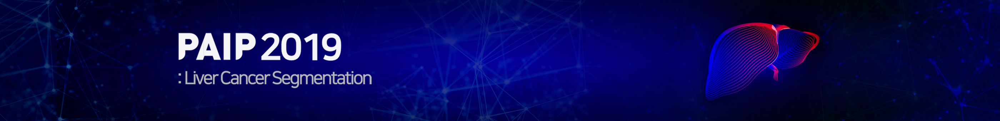
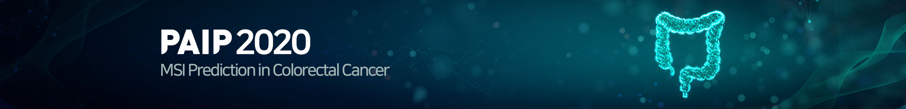
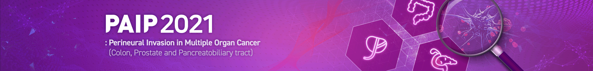
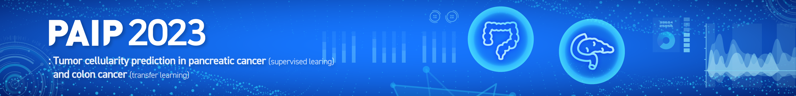

PAIP 2019
Liver Cancer Segmentation Challenge
Tasks included liver cancer segmentation and viable tumor burden estimation in whole-slide pathology images.
The Pathology Artificial Intelligence Platform (PAIP) is a research platform established to support the development and evaluation of artificial intelligence methods in digital pathology.
The PAIP platform dataset will be made available through external links via the Korea Health Data Platform (KHDP) of Seoul National University Hospital.
The dataset is currently being prepared for transfer to the platform. Additional information and access instructions will be updated once the dataset becomes available.
The dataset contains approximately 3000 whole-slide images (WSIs) with pathologist annotations across five cancer types:
The information will be updated when the dataset becomes available.
The datasets are made available under the Creative Commons Attribution-NonCommercial 4.0 International License (CC BY-NC 4.0) .
The available datasets vary by challenge. Before submitting a DUA, please make sure to check the challenge name and dataset description on the corresponding official challenge website. Links to the official challenge websites can be found in the Challenges section below.
PAIP challenge datasets are provided for research use after review and approval of a Data Use Agreement (DUA).
Once a DUA has been approved by the PAIP team, temporary access to the requested dataset will be provided. Therefore, if you have submitted a DUA, please check your email regularly for access information.
To request access, please complete the DUA available from the link below and send the completed document by email.
Email: lab.kblee117@gmail.com

Liver Cancer Segmentation Challenge
Tasks included liver cancer segmentation and viable tumor burden estimation in whole-slide pathology images.

Microsatellite Instability Prediction in Colorectal Cancer
The challenge focused on predicting microsatellite instability (MSI) status from colorectal cancer whole-slide images.

Perineural Invasion in Multiple Organ Cancer (Colon, Prostate and Pancreatobiliary tract)
The challenge focused on detecting perineural invasion in colon, prostate, and pancreatobiliary cancers.

Tumor cellularity prediction in pancreatic cancer (supervised learning) and colon cancer (transfer learning)
The challenge addressed tumor cellularity prediction in pancreatic cancer using supervised learning and in colorectal cancer using transfer learning.
If you use a PAIP challenge dataset in a publication, please cite the corresponding challenge publication or official challenge website as indicated below.
Kim YJ, Jang H, Lee K, et al. PAIP 2019: Liver cancer segmentation challenge. Medical Image Analysis. 2021;67:101854.
DOI: 10.1016/j.media.2020.101854
Kim K, Lee K, Cho S, et al. PAIP 2020: Microsatellite instability prediction in colorectal cancer. Medical Image Analysis. 2023;89:102886.
DOI: 10.1016/j.media.2023.102886
Please cite the official PAIP 2021 challenge website until the journal publication becomes available.
PAIP 2021 Challenge: Perineural Invasion in Multiple-Organ Cancer
The journal publication associated with PAIP 2021 will be added here once available.
Please cite the official PAIP 2023 challenge website until the journal publication becomes available.
PAIP 2023: Tumor Cellularity Prediction in Pancreatic and Colorectal Cancer
The journal publication associated with PAIP 2023 will be added here once available.
This research was supported by a grant of the Korea Health Technology R&D Project through the Korea Health Industry Development Institute (KHIDI), funded by the Ministry of Health & Welfare, Republic of Korea (grant number : HI18C0316). Ethics approval: Approved by Seoul National University Hospital Institutional Review Board (IRB) (IRB No.H-1808-035-964).
Detailed ethics approval and consent information should be referred to in the corresponding dataset documentation or publication.
For questions regarding PAIP datasets or data access: